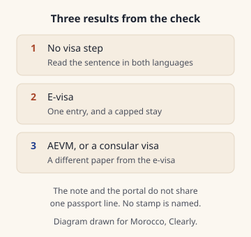

Do I need a visa?
Press Check on Accès Maroc before you pay for a flight you cannot change. The pages do not agree on passport validity or on how long an e-visa stay may last.
Open Accès Maroc and press Check before you pay for a flight you cannot change. The form asks for your nationality, where you live, the passport type, why you are going, and whether another visa of yours is still valid.
If the site offers an e-visa, the conditions note caps the stay at 30 days Source-checked 27 Oct 2026 Sources, allows one entry Source-checked 27 Oct 2026 Sources, and the paper lasts 180 days Source-checked 27 Oct 2026 Sources from the day it is issued.
That note asks for an ordinary passport still valid at least 90 days Source-checked 27 Oct 2026 Sources on the day you apply. A checkbox asks for more than 90 days Sources disagree Sources, and a portal line left in French on the English file says more than 6 months Sources disagree Sources. Do not treat those lines as one rule.
The French result says you are not subject to the entry-visa step. The English result says you will not need a visa or an electronic travel authorisation Sources disagree Sources.
Take the passport to the border, and the e-visa file if one was sent. The note does not name a stamp Source-checked 27 Oct 2026 Sources.
Dirham notes you carry in or out are no more than 2,000 MAD Unconfirmed Sources.
Last updated 27 Oct 2026.
Written by Omar Oujoud in Casablanca. Research drafting is AI-assisted; observations are recorded in person. How we check
Jump to what’s still being checked · sources
How we checked
The conditions note was opened in English and in French. Both cap an e-visa stay at 30 days Source-checked 27 Oct 2026 Sources, allow one entry Source-checked 27 Oct 2026 Sources, and set the paper at 180 days Source-checked 27 Oct 2026 Sources from issue. A portal sentence, agreeing with itself in both languages, says one month Sources disagree Sources. The note and that sentence are not one rule.
Passport validity is three lines. The note says at least 90 days Source-checked 27 Oct 2026 Sources. A checkbox says more than 90 days Sources disagree Sources. A French sentence stored in both language files says more than 6 months Sources disagree Sources.
The live form shows five questions Source-checked 27 Oct 2026 Sources. The button is Check in English and Vérifier in French Source-checked 27 Oct 2026 Sources. An event question appears only when the page turns it on Source-checked 27 Oct 2026 Sources. The French user guides name six details Source-checked 27 Oct 2026 Sources, including date of birth. Date of birth is named in the French guides and hidden on the live form Sources disagree Sources.
The main result sentence does not match across the two languages Sources disagree Sources. A different sentence says you are exempt from the entry-visa step, in both languages Source-checked 27 Oct 2026 Sources. On the event path, the French line also names the travel authorisation and the English line does not Sources disagree Sources.
The e-visa note, the travel-authorisation file, and the event path are different papers. Do not average 30 days Source-checked 27 Oct 2026 Sources, no more than 90 days Source-checked 27 Oct 2026 Sources, and three months Source-checked 27 Oct 2026 Sources.
For a residence paper, the note says at least 180 days Source-checked 27 Oct 2026 Sources and a portal string says greater than 180 days Sources disagree Sources. The note says the issuing clock does not run for an incomplete file. The English word and the French word for the other case are not the same, so that case is not restated.
The country names in the two notes are the same set. The order is not, so the list below is alphabetical. The tourism-office formalities page did not open, and the immigration law file did not open, so their stay figures are not used. A direct request to Office des Changes was rejected, so the dirham line and the declaration line stay the earlier records. Nothing on this page was seen at a border.

At a glance
The check can point you to no visa step, an e-visa, or an electronic travel authorisation. A stay for someone who skips the visa is Not yet confirmed. The lengths below are only the ones these pages print.
| Detail | No visa step | E-visa | Electronic travel authorisation |
|---|---|---|---|
| Passport | Not yet confirmed | at least 90 days Source-checked 27 Oct 2026 Sources on the note; more than 90 days Sources disagree Sources on a checkbox; more than 6 months Sources disagree Sources on a portal line | an ordinary passport Source-checked 27 Oct 2026 Sources |
| Stay | Not yet confirmed | no more than 30 days Source-checked 27 Oct 2026 Sources on the note, and one month Sources disagree Sources on a portal sentence | no more than 90 days Source-checked 27 Oct 2026 Sources in the French language file |
| Entries | Not yet confirmed | one entry Source-checked 27 Oct 2026 Sources | Not yet confirmed |
| How long the paper lasts | Not yet confirmed | 180 days Source-checked 27 Oct 2026 Sources from the day it is issued | Not yet confirmed |
| Price printed | Not yet confirmed | no amount is printed Source-checked 27 Oct 2026 Sources | no card-payment step is described Source-checked 27 Oct 2026 Sources |
Step by step
- Open Accès Maroc and fill the five questions Source-checked 27 Oct 2026 Sources: nationality, where you live, passport type, why you are going, and whether another visa is still valid. If a question about an event appears, answer it.
- Press Check. Read the sentence in the language you used, then switch language and read it again. The French result and the English result are not the same sentence Sources disagree Sources.
- If the result is that you skip the visa step, stop there for the visa. These pages do not print one stay length for every visitor who skips it. The dirham line further down still applies. The same dirham line is on Cash and ATMs at Marrakech airport. Landing in the other city starts at Casablanca airport.
- If it offers an e-visa, open the conditions note in both languages before you pay. You need an ordinary passport Source-checked 27 Oct 2026 Sources with at least 90 days Source-checked 27 Oct 2026 Sources left on the note, and you have also seen the 6 months Sources disagree Sources line. The stay on the note is no more than 30 days Source-checked 27 Oct 2026 Sources, one entry Source-checked 27 Oct 2026 Sources, and the paper lasts 180 days Source-checked 27 Oct 2026 Sources.
- The photo is 35 by 45 mm Source-checked 27 Oct 2026 Sources, taken within the last 6 months Source-checked 27 Oct 2026 Sources. Files are jpg, jpeg, or pdf Source-checked 27 Oct 2026 Sources, each no more than 1 MB Source-checked 27 Oct 2026 Sources. A family file can hold up to 10 Source-checked 27 Oct 2026 Sources applications. Pay by card after you choose Express or Standard. Express is 24 hours Source-checked 27 Oct 2026 Sources and standard is 72 hours Source-checked 27 Oct 2026 Sources, on Moroccan working days Source-checked 27 Oct 2026 Sources. No amount is printed Source-checked 27 Oct 2026 Sources. Once the file is validated and paid, you cannot cancel it or get the money back Source-checked 27 Oct 2026 Sources.
- If it asks for an electronic travel authorisation, the French guide walks through an account, your passport, the trip, and the files. It does not describe a card payment Source-checked 27 Oct 2026 Sources. The French language file caps the planned stay at no more than 90 days Source-checked 27 Oct 2026 Sources. The English file does not carry that sentence. If you are 55 or older Source-checked 27 Oct 2026 Sources, a French sentence on both language files says you do not need a travel authorisation.
- If it says the visa is filed at a consular post, follow the path the site gives you. This guide does not copy a country list.
- On the day, show the passport. If you have an e-visa file, show it at boarding, at the desk, and if someone asks during the stay. The note also names a return ticket Source-checked 27 Oct 2026 Sources, hospital and repatriation insurance Source-checked 27 Oct 2026 Sources, and means of subsistence: an international bank card Source-checked 27 Oct 2026 Sources or more than 70 euro per person per day Source-checked 27 Oct 2026 Sources.
Do the check on their site. One answer: Use the official eligibility service for your circumstances. Prepare the details the official form asks for before you type. Bring what you know about your own documents and trip. Open the official Accès Maroc service and follow its check. Enter personal details only where necessary in the official process. Next step: press Check there. Do not email passport scans to this website.
Our advice: run Check before you pay for a flight you cannot change, and do not travel on the friendlier of the two languages when they disagree.
Who the e-visa note is written for
The note is for people who already need a visa. It names three paths. Everyone on those paths needs an ordinary passport Source-checked 27 Oct 2026 Sources.
| Detail | Who | Extra paper |
|---|---|---|
| A | eleven countries named on the note Source-checked 27 Oct 2026 Sources | none named beyond the passport Source-checked 27 Oct 2026 Sources |
| B | visa-required nationals living in the places the note names Source-checked 27 Oct 2026 Sources | a residence paper valid at least 180 days Source-checked 27 Oct 2026 Sources |
| C | visa-required nationals holding a multiple-entry visa from the places the note names Source-checked 27 Oct 2026 Sources | that visa, valid at least 90 days Source-checked 27 Oct 2026 Sources |
Path A names Azerbaijan, Benin, Cambodia, Guatemala and India. It also names Brunei Darussalam, Israel, Jordan, Laos, Thailand and Vietnam.
The residence list names Australia, Canada, Japan, New Zealand and Norway. It also names Switzerland, the European Union, the United Arab Emirates, the United Kingdom and the United States.
The visa list names Australia, Canada, Ireland, Japan and New Zealand. It also names Norway, Schengen, the United Kingdom and the United States.
Ireland sits on the visa list and not on the residence list. The European Union, Switzerland and the United Arab Emirates sit on the residence list and not on the visa list. Schengen sits on the visa list only.
The note issues the e-visa for Tourism or Business Source-checked 27 Oct 2026 Sources, and the holder cannot apply for residence Source-checked 27 Oct 2026 Sources. A business trip needs a document that explains the business trip Source-checked 27 Oct 2026 Sources. For path B, receipts of a residence application are refused in both notes. The English note also names work permits and circulation documents. The French note does not. Sources disagree Sources
The residence paper on the note is valid at least 180 days Source-checked 27 Oct 2026 Sources. A portal string says greater than 180 days Sources disagree Sources. Do not treat those as one threshold.
The edge case
A child under 18 Source-checked 27 Oct 2026 Sources may use an e-visa only with one parent or a legal representative. The note does not say what happens if the child travels with someone else.
You cannot stack e-visa stays. You must leave at the end of the first stay before a new stay starts Source-checked 27 Oct 2026 Sources.
If the form asks about an event, that path is a different paper. Both languages cap that stay at three months Source-checked 27 Oct 2026 Sources. The event question stays hidden unless the page turns it on.
At 55 or older Source-checked 27 Oct 2026 Sources, the travel-authorisation sentence is the French line on both language files. It is not a sentence about the e-visa.
Diplomatic, service, special, refugee and stateless documents go to an embassy or a consulate general Source-checked 27 Oct 2026 Sources. The e-visa note does not take those papers.
A night landing: these pages do not print border-desk hours. If you land at Marrakech, the passport-control mark is on Cash and ATMs at Marrakech airport. That mark is not a visa rule, and it is not a clock for every border. The ride into town is on Marrakech airport to the medina.
What to watch for
Paying before you have read the result in both languages. The English result can sound broader than the French one.
A residence receipt, a renewal slip, or an extension slip is not the residence paper the note asks for.
Holding the e-visa file does not force the border to let you in Source-checked 27 Oct 2026 Sources.
Our advice: if the two languages disagree, do not pick the friendlier one and travel on it. Use the stricter line you were shown, or run Check again before you fly.
Money at the border
Dirham notes you bring in or take out are no more than 2,000 MAD Unconfirmed Sources. Foreign currency: there is no limit on what you bring in, but cash worth 100,000 MAD or more must be declared to customs on arrival, and you need that declaration to take it out again Unconfirmed Sources.
The same dirham line is on Cash and ATMs at Marrakech airport.
Our advice: plan to get most of your dirhams after you arrive, and spend them before you leave.
Still being checked
Not yet confirmed, so not stated as fact on this page:
- Passport validity: the note says at least 90 days Source-checked 27 Oct 2026 Sources, a checkbox says more than 90 days Sources disagree Sources, and a portal line says more than 6 months Sources disagree Sources.
- E-visa stay: the note says no more than 30 days Source-checked 27 Oct 2026 Sources and a portal sentence says one month Sources disagree Sources.
- The French and English results do not say the same thing Sources disagree Sources.
- Date of birth is named in the French guides and hidden on the live form Sources disagree Sources.
- Which residence papers are refused: the English note names work permits and circulation documents, and the French note does not Sources disagree Sources.
- Residence-paper validity: the note says at least 180 days Source-checked 27 Oct 2026 Sources and a portal string says greater than 180 days Sources disagree Sources.
- The dirham-note cap was not re-read. A direct request to Office des Changes was rejected.
- The foreign-currency declaration was not re-read, for the same reason.
- The fee amount is not printed.
- Whether a stamp is given, and whether that stamp starts the stay.
- The tourism-office formalities page did not open, so its stay figures are not used.
- The immigration law file did not open, so its stay figures are not used.
- The country list for people who skip the visa is not copied here.
- Border desk hours are not printed on these pages.
- Whether a child can travel with someone other than a parent or a legal representative.
Next on your route.
Each guide covers one step of the journey.
Sources for this page
Every fact on this page shows when it was checked and links here to its source. What the badges mean.
- E-visa stay on the note: Accès Maroc, Accès Maroc, page 2. Reviewed 27 Oct 2026.
- Ordinary passport on the e-visa note: Accès Maroc, Accès Maroc, page 2. Reviewed 27 Oct 2026.
- Passport validity lines that do not match: Accès Maroc, Accès Maroc, page 2, Accès Maroc, page 3, Accès Maroc, page 4. Reviewed 27 Oct 2026.
- The no-visa result does not match across languages: Accès Maroc, Accès Maroc, page 2. Reviewed 27 Oct 2026.
- What to show at the border with an e-visa: Accès Maroc, Accès Maroc, page 2. Reviewed 27 Oct 2026.
- Dirham banknotes at the border: Office des Changes. Reviewed 30 Sep 2026.
- E-visa stay: 30 days and one month: Accès Maroc, Accès Maroc, page 2, Accès Maroc, page 3, Accès Maroc, page 4. Reviewed 27 Oct 2026.
- Questions on the Accès Maroc check: Accès Maroc. Reviewed 27 Oct 2026.
- Four results named in the French user guides: Accès Maroc, Accès Maroc, page 2. Reviewed 27 Oct 2026.
- Date of birth on the guides and on the live form: Accès Maroc, Accès Maroc, page 2, Accès Maroc, page 3. Reviewed 27 Oct 2026.
- A no-visa sentence that matches in both languages: Accès Maroc, Accès Maroc, page 2. Reviewed 27 Oct 2026.
- Planned stay on the travel-authorisation form: Accès Maroc. Reviewed 27 Oct 2026.
- Stay cap on the event path: Accès Maroc, Accès Maroc, page 2. Reviewed 27 Oct 2026.
- Three paths on the e-visa note: Accès Maroc, Accès Maroc, page 2. Reviewed 27 Oct 2026.
- Residence-paper validity: at least 180 days, or greater than 180 days: Accès Maroc, Accès Maroc, page 2, Accès Maroc, page 3, Accès Maroc, page 4. Reviewed 27 Oct 2026.
- Ordinary passport on the travel-authorisation form: Accès Maroc, Accès Maroc, page 2. Reviewed 27 Oct 2026.
- E-visa payment, with no amount printed: Accès Maroc, Accès Maroc, page 2, Accès Maroc, page 3. Reviewed 27 Oct 2026.
- Travel-authorisation steps in the French guide: Accès Maroc. Reviewed 27 Oct 2026.
- E-visa photo and file types: Accès Maroc, Accès Maroc, page 2. Reviewed 27 Oct 2026.
- How many applications in one e-visa file: Accès Maroc. Reviewed 27 Oct 2026.
- E-visa issuing times on the note: Accès Maroc, Accès Maroc, page 2. Reviewed 27 Oct 2026.
- Purpose, residence, and refund on the e-visa note: Accès Maroc, Accès Maroc, page 2. Reviewed 27 Oct 2026.
- Age 55 and the travel authorisation: Accès Maroc, Accès Maroc, page 2. Reviewed 27 Oct 2026.
- Residence papers the e-visa note refuses: Accès Maroc, Accès Maroc, page 2. Reviewed 27 Oct 2026.
- A child with an e-visa: Accès Maroc, Accès Maroc, page 2. Reviewed 27 Oct 2026.
- Declaring foreign currency: Office des Changes. Reviewed 30 Sep 2026.